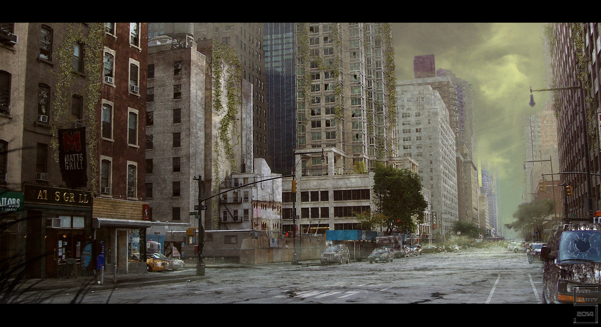

|  | You decide to travel outside. You take a look around to see the city you grew up in brought to rubble. You pick up a newspaper that says August 21, 2055. You look at your suroundings and see one tall, lone building still remaining. Do you try to get to the roof of the building or do you keep exploring the city streets? |
Explore the cityClimb on top of roof |